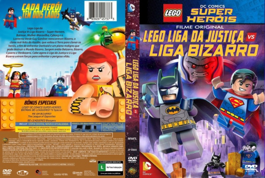
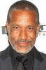

Outro Título:LEGO DC Comics Super Heroes: Justice League vs. Bizarro League
País:United States, 48 minutos
Idiomas falados:Espanhol, Inglês, Português
Gênero(s):Ação, Aventura, Animação, Família, Comédia
Diretor(s):Brandon Vietti
Escritor(es):Michael Jelenic
Codec:MPEG-2 (DVD)
Número: 5779


Certificado:L
Sinopse:
Super-Homem, Batman, Mulher-Maravilha, Cyborg e o Lanterna Verde Guy Gardner reencontram Bizarro, o clone mal-feito do Azulão, que voltou à Terra para clonar os heróis, a fim de enfrentar Darkseid e um plano maligno que pode destruir o Mundo Bizarro. Surgem então Batzarro, Bizarra, Cyzarro e Verdezarro. Cabe agora à Liga da Justiça e à Liga Bizarra unirem forças para enfrentar o perigoso vilão.
Elenco: 


Tipo de mídia: DVD5,
Legendas: Espanhol, Inglês, Português, Sem Legendas
Alugado: Não
Tela: Anamorphic Widescreen